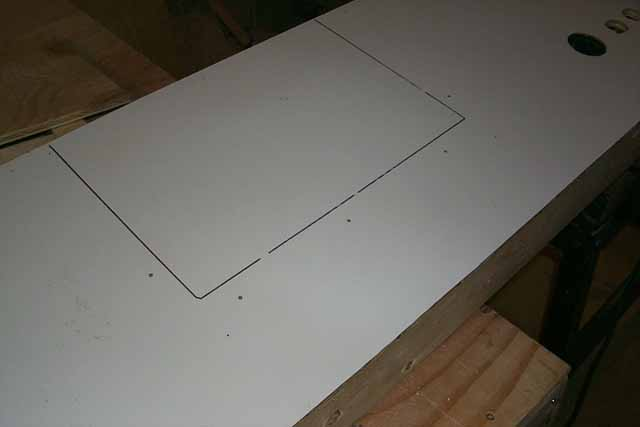
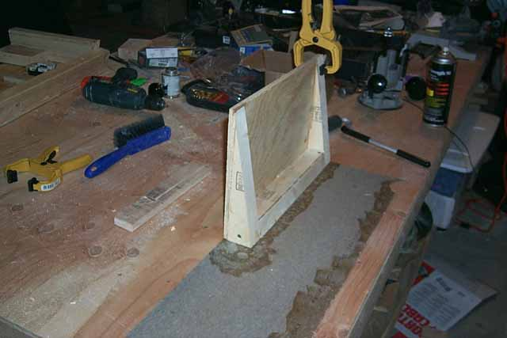

Wow, page 9 already?
Are we there yet Poppa Smurf? Not far now....

Okay, so the outline is drawn
and holes are drilled along the front portion of where the pedestal will
be mounted. Don't go too far back otherwise you wont have enough
depth for the screws and they'll wind up popping out of the top of your
pedestal base.... not a good thing. When the pedestal
is mounted permanently, some glue will be dabbed onto the underside for
additional bonding of the materials. I know you see me
constantly mentioning "glue here, dab of glue there" and so forth.
This is an important measure, do it throughout the assembly process, glue
compliments the screws being put into the pieces and creates a stronger
and more uniform hold to all of the pieces and in turn will increase the
durability and longevity of your kiosk.

Laminate the pedestal seperately,
its a lot easier this way then trying to do it with it already attached
to the control panel. Finish the front, sides, then the top.
Using the file at a 45 degree angle, clean everything up for a nice finished
look. Also put the front piece of laminate onto
the control panel and clean those edges up and then its time to mount the
pedestal and spray paint the control panel. Then we go back
to those black rectangle overlays to mount them and the hardware....